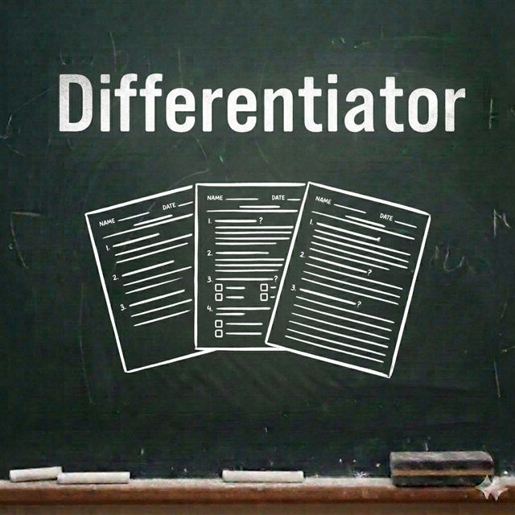

Free teacher tool
Differentiator
Differentiator takes one classroom activity and generates three ready-to-use versions — Support, Core and Stretch — so you're not writing three separate lessons from scratch for every class.

Who it's for
Who Differentiator is for
Primary and secondary teachers who need to differentiate an activity for a mixed-attainment class. Free to use, works in your browser, and needs no account or sign-up.
Generates Support, Core and Stretch versions of one activity
Suggested teacher prompts and common stumbling points
Optional TA briefing summary
Copy, print or clear results in one click
Works directly in your browser
Related resources
More teacher time-savers
Try the free Teacher Tools library, or explore one of these related tools.